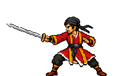
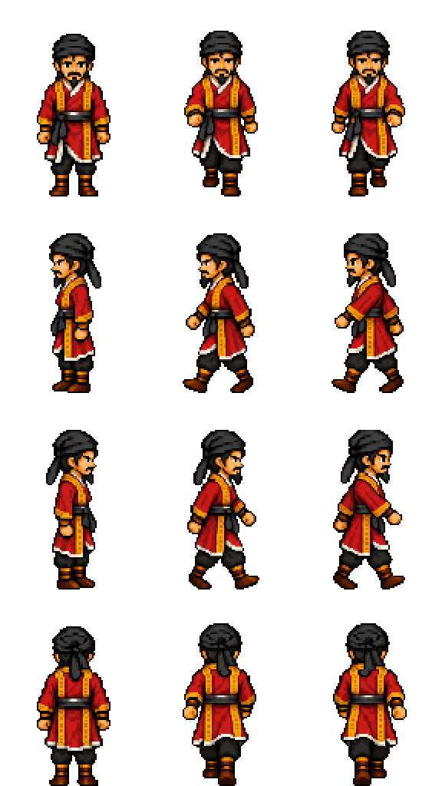

Song Jiang · Classic movement
Open on game location backgrounds · Files and generation prompts
Four-direction walking, original Classic proportions, and one static dynamic battle pose.
Battle · one static left-facing pose

Walking sheet
